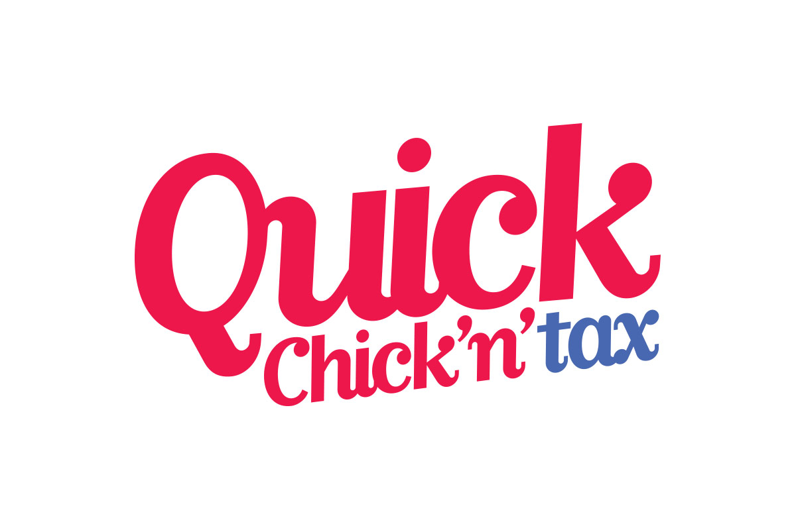

Quick Chick'n'Tax is a test in rationalising and designing an irrational idea. A designer can be challenged by unusual client requests and demands. A theoretical millionaire client and their crazy idea was a self-imposed constraint in developing this restaurant concept, identity, service design, launch strategy and advertising. This was a challenge of my design process, user research, conceptual and creative thinking.
The design process can turn crazy dumb ideas into ingenius, quirky and awesome things

Quick Chick’n’tax is a self-aware fast casual chain restaurant and tax service business.
The two components of the hybrid business can work independently of each other, but importantly can seamlessly combine to give a unique customer experience. This unique offering was identified by conducting formal concept testing through potential user interviews. The idea behind the hybrid business makes the most of wasted idle customer time in the tax consultation service experience.
The visual language is inspired by Corporate America graphic design.
The only thing more fun than a tax consultation is a tax consultation with lunch.
The restaurant has been conceptualised with digital integration at it’s core to optimise efficiency and sustainability—particularly through waste minimisation. All stock in the restaurant is to be digitally monitored. When it is running low it will automatically order more stock. If there is a surplus of stock—and it is about to perish—it will be sold to the customers at a discount, or given away for free.

Innovative in-table ordering interface (ITOI)
An aim in the service design is to reduce unnecessary waiting time. This has been achieved by offering multiple ways of ordering, in particular by using the innovative in-table ordering interface (ITOI). This is a touchscreen tablet embedded in the tables. The main benefit is that customers can order and pay from their table. The ITOI also offers real-time digital communication with the customers. This could be to offer free or discounted food, but also to engage with online for additional discounts or offerings.